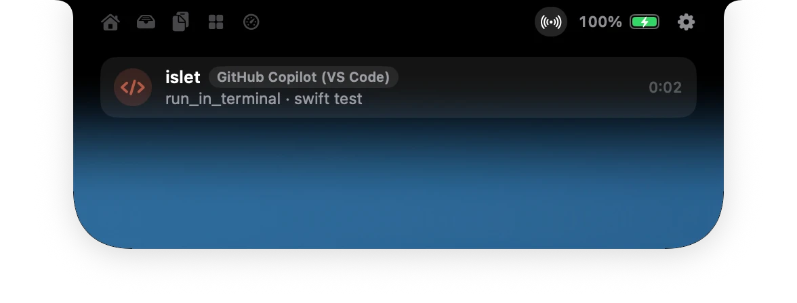

Islet
The notch, made useful.


A song plays: its cover and a live equalizer sit beside the camera, and nowhere else.
Islet turns the camera cutout of your MacBook into a living island: music, AirPods, volume, files, timers and the AI agents you run, right where you already look.
- Free and open source
- Version 1.0
- macOS 14 or later
- 15 MB of memory at rest
How it works
It lives in the notch. It stays out of your way.
Closed, Islet is exactly the camera cutout. When something happens, it grows beside the camera. When you want more, it opens. Every image on this page is the app itself.
At rest
The size of the notch
Nothing runs and nothing shows. The menu bar around it keeps every click.
A glance
Two small wings
A song, the volume, a timer, an agent at work. The wings never cover a menu or an icon.
Open
Everything, one gesture away
Hover or click to open. Swipe down to open, up to close, sideways to skip a track.
Shelf and AirDrop
Drop it on the notch. Pick it up anywhere.
Drag a file onto the notch and the island keeps it for you, across apps and Spaces. Drag it out when you are ready, or send it with AirDrop.


Clipboard
Copy now. Find it later.
Everything you copy lands in the notch: text, links, pictures. Click one to copy it again. Pin the ones you keep; passwords are never recorded, and nothing touches the disk.


Features
All you expect from the notch.
Islet does what the best notch apps do, drawn by the Mac’s own graphics engine so it stays smooth and light. Turn off any page you never use, and it is gone.
Now playing
Apple Music, Spotify, your browser and any app that shows in Control Center, with the cover, a scrubber and the audio output.
Volume and brightness
The keys show a quiet gauge in the notch instead of the big square in the middle of the screen.
AirPods and battery
The exact model, each earbud, the case, and your Mac charging.
File shelf and AirDrop
Drop files on the notch, carry them between Spaces, drag them out or send them with AirDrop.
Clipboard history
Text and images you copied, with pins. Kept in memory only; passwords are never recorded.
Agenda and reminders
The next events of your day, a Join button for video calls, and what is due today.
Timer, colour picker, mirror
A countdown in the wings, an eyedropper for any pixel, a camera mirror before a call.
System at a glance
Processor, memory, disk and network, sampled only while you look.
Microphone and camera
See which app is listening or filming, right where the camera is.
Keep awake, downloads
Keep the Mac awake for an hour, and follow your downloads as they finish.
Every Mac
No notch? Islet floats just under the menu bar, on built-in and external displays alike.
Settings, not chores
Turn off any page you never use, reorder the others, choose the size and the speed.
AI agents
Your AI agents, in the notch.
Claude Code, Codex, Gemini CLI, Cursor and GitHub Copilot in VS Code tell Islet what they are doing through their own hooks. When Claude Code or Codex needs permission, the island opens with Allow and Deny. Islet never signs in to any AI service.

Connected in one click
In Settings, or during setup. Islet keeps a backup of each settings file it edits.
- Claude CodeSessions, Allow and Deny
- CodexSessions, Allow and Deny
- Gemini CLISessions, and when it waits for you
- CursorAgent sessions, edits and commands
- GitHub CopilotVS Code sessions, their tools, and Done
- Any other agentOne line: islet agent
Ignore a request and the agent asks in the terminal, as usual. If Islet is closed, the hooks exit at once and change nothing.
AirPods
It knows which ones you just put on.
Islet reads the model your headphones report: AirPods, AirPods Pro or AirPods Max, and shows each earbud, the case, or the headphones’ single battery.
Settings
Make it yours.
Keep only what you use. Every page can go, every activity can stay quiet, and the island changes as you do.


Turn off what you never use.
Shelf, clipboard, tools, system: switch a page off in Settings and its tab leaves the island at once. Here, everything but music.

Every page onOnly music and Live
Three sizes.
Compact, standard or large when open, with the speed you like: snappy, standard or relaxed.


Four kinds of glass.
On macOS 26 the open island stays black where it meets the notch and melts into glass below. Liquid bends the desktop behind it like a thick pane; Transparent lets it show through; Tinted frosts it; Black keeps the island as it was.


Your Mac
Light on your Mac. At home on any Mac.
Islet sleeps until something changes. The island is drawn by the system compositor, and its content only exists while it is open.
15MB
Memory at rest
The app and its music helper, together.
0.004%
Of one core at rest
One minute idle. 0.013 % while you use the Mac, with clipboard history on.
4MB
The download
The whole app, signed and notarized. Updates arrive inside it.
1request
A day, at most
The update check, which you can turn off. Nothing else leaves your Mac.
In the notch
MacBooks with a notch.
- MacBook Pro 14 and 16 inch2021 and later
- MacBook Air 13 and 15 inchM2 and later
Floating island
Just under the menu bar, invisible until something happens.
- MacBook Air M1, MacBook Pro 13 inchBuilt-in display
- iMac, Mac mini, Mac Studio, Mac ProAny display
- External displaysOr stay on the notch
macOS 14 Sonoma or later, Apple silicon and Intel. Measured on a 14-inch MacBook Pro (M3 Pro), macOS 26.5.
Side by side
Islet and the other notch apps.
Measured the same way, on the same Mac, the same night: one minute idle after launch, helper processes included.
| Feature | Islet | Alcove | boring.notch | Atoll |
|---|---|---|---|---|
| Price | Free | $14.99 | Free | Free |
| Open source | MIT | No | GPL | GPL |
| Memory at rest | 15 MB | 56 MB | 71 MB | 106 MB |
| Processor at rest | 0.004 % | 0.01 % | 3.9 % | 6.8 % |
| Now playing, volume and brightness | Yes | Yes | Yes | Yes |
| Model-aware AirPods | Yes | Yes | No | Yes |
| File shelf and AirDrop | Yes | No | Yes | Yes |
| Microphone and camera in use | Yes | Not verified | No | Yes |
| Keeps clear of the menu bar | Yes | Not verified | Not verified | Yes |
| Command line, local API, Shortcuts | Yes | No | No | Partly |
| AI agents with Allow and Deny | Yes | No | No | No |
| Extensions | Yes | No | No | Yes |
Swipe the table to see every app.
Alcove, boring.notch and Atoll as downloaded in September 2026. For closed apps, “not verified” means we could not confirm it either way. Corrections are welcome on GitHub.
Privacy
It sits by your camera. It keeps to itself.
No account, no tracking
No sign in, no analytics in the app. The only connection is a daily check for updates, and you can turn it off.
Nothing leaves your Mac
Clipboard history lives in memory and forgets passwords. The camera runs only while the mirror is open.
Open to you only
Scripts and agents talk to Islet through a file in your user folder that only your account can open. No network port.
Open source
Every line is on GitHub.
Islet is MIT licensed: read exactly what runs on your Mac, change it, ship your own. Issues and pull requests are welcome.
ruben4reall / islet The notch, made useful. Swift, AppKit and SwiftUI, a local API, and the rules of the island tested on their own.A window shaped like the notch
Closed, it is exactly the notch, so the menu bar keeps every click. No global mouse monitor.
Drawn by the compositor
A Core Animation shape morphed with springs. The bars and rings beside the camera cost the app nothing per frame.
Content only while open
The pages are SwiftUI views made as the island opens and thrown away as it closes.
The islet command
Show any script’s progress in the notch with one line: islet push build --progress 40%.
Local API and Shortcuts
A Unix socket only you can reach, islet:// links and Shortcuts actions.
Extensions
A folder with a script: whatever it prints shows in the island.
Questions
Does my Mac need a notch?
No. On a MacBook with a notch, Islet lives in it. On other Macs and on external displays it floats just under the menu bar, invisible until something happens.
Will it cover my menu bar icons?
Never. Islet measures where the menus and the icons are on every app switch. The wings shrink to the free space, keep a single wing when an app’s menus reach the notch, and wait in the open island when there is no room at all.
Does it show Spotify and my browser?
Yes. Islet reads what Control Center shows, so Spotify, Apple Music, YouTube in Safari or Chrome and other players appear with their cover.
Which permissions does it ask for?
Only those the modules you choose need: Accessibility for the volume and brightness keys, Calendars and Reminders for the agenda, Bluetooth for headphone battery, the camera only while the mirror is open.
Is it safe with my AI agents?
Islet never signs in to any AI service. It hears the hooks Claude Code, Codex, Gemini CLI, Cursor and GitHub Copilot in VS Code call on your Mac, a documented feature of each, and Allow in the notch is the same as typing yes in the terminal.
Does it work with ChatGPT in the browser?
No. Chat apps offer no hooks, and following them would mean reading your screen, which Islet will not do.
How much memory and battery does it use?
15 MB of memory at rest, the music helper included, and almost no processor time: Islet only wakes when something changes.
How do I remove it?
Disconnect your AI agents in Settings, Developers, then quit Islet from its right-click menu and move it to the Trash.
Is Islet made by Apple?
No. Islet is an independent open source project and is not affiliated with Apple.

Look up. It’s already there.
Free, open source, and ready in a minute.
macOS 14 or later · Apple silicon and Intel · Notarized by Apple. Updates arrive through the app, when you allow them.
Or install it with Homebrew: brew install --cask ruben4reall/tap/islet